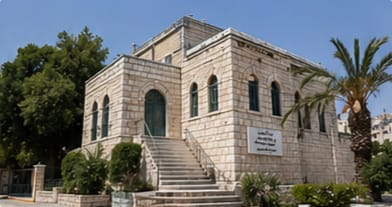
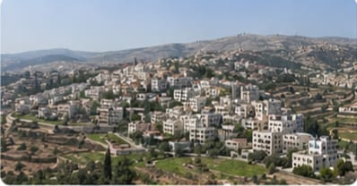
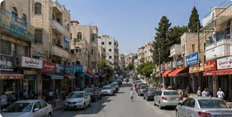
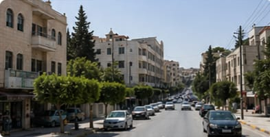
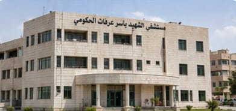
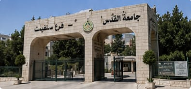
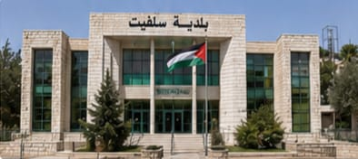
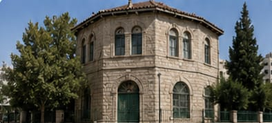
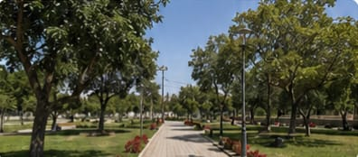
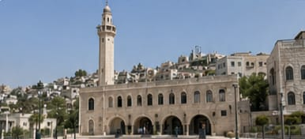

سلفيت: أصالة التراث ونبض الحياة
"جولة بصرية تلخص معالم مدينة سلفيت، تجمع بين جمال طبيعتها الجبلية ومقتنياتها التراثية التاريخية، وصولاً إلى حيوية أسواقها وشوارعها التي تمثل قلب المدينة النابض بالحياة اليومية."

متحف سلفيت الشعبي
متحف تراثي يضم مجموعات من الأدوات التقليدية والمقتنيات الشعبية التي تعكس حياة أهل سلفيت عبر الأجيال.

منظر عام لمدينة سلفيت
تقع مدينة سلفيت في قلب الضفة الغربية، وتتميز بموقعها الجبلي وجمال طبيعتها وتاريخها العريق وتراثها الثقافي.

السوق الرئيسي
سوق شعبي قديم يعكس أصالة المدينة وتراثها التجاري، يضم محلات متنوعة للمواد الغذائية والملابس والأدوات المختلفة.

شارع الحرية
أحد الشوارع الرئيسية والحيوية في المدينة، يربط بين مختلف الأحياء والمناطق التجارية والخدمية.
سلفيت: مراكز الخدمات والتنمية المجتمعية
"البنية التحتية المتطورة التي تدعم صمود وتطور المجتمع في سلفيت"

مستشفى الشهيد ياسر عرفات الحكومي
المستشفى الحكومي الوحيد في محافظة سلفيت، يقدم خدمات صحية شاملة لسكان المدينة والقرى والمناطق المجاورة.

جامعة القدس المفتوحة - فرع سلفيت
إحدى فروع جامعة القدس المفتوحة في الضفة الغربية، تقدم برامج أكاديمية متنوعة تخدم الطلبة من مختلف المحافظات.

بلدية سلفيت
الجهة المسؤولة عن إدارة شؤون المدينة وتقديم الخدمات للمواطنين والعمل على تطوير البنية التحتية.

مركز يونس السعادة الثقافي
مركز ثقافي يهدف إلى نشر الثقافة والفنون والتراث الفلسطيني، ويستضيف الفعاليات والمعارض والأنشطة الثقافية المختلفة.
سلفيت: تلاحم مجتمعي ومعالم بارزة
"إطلالة على الروح الاجتماعية والدينية لمدينة سلفيت، تبرز جمال مسجدها الكبير ومتنفساتها الطبيعية في الحديقة العامة، إلى جانب توثيق للمناسبات الوطنية والأكاديمية المتمثلة في الفعاليات الجماهيرية وحفلات التخرج."

حديقة سلفيت العامة
متنفس طبيعي لأهالي المدينة، تقام فيها العديد من الفعاليات الترفيهية والثقافية والمناسبات المجتمعية.

مسجد سلفيت الكبير
أحد أبرز المساجد في المدينة، يتميز بتصميمه المعماري الجميل ومكانته الدينية والاجتماعية بين أهالي سلفيت.

تخرج طلبة جامعة القدس المفتوحة - سلفيت
لحظة فخر واعتزاز بنجاح الطلبة وتفوقهم، ومساهمتهم في بناء المجتمع وتنمية الوطن.

فعالية جماهيرية في ساحة البلدية
ساحة مركزية تقام فيها الفعاليات الوطنية والاجتماعية والثقافية، وتشهد مشاركة واسعة من أبناء المدينة.